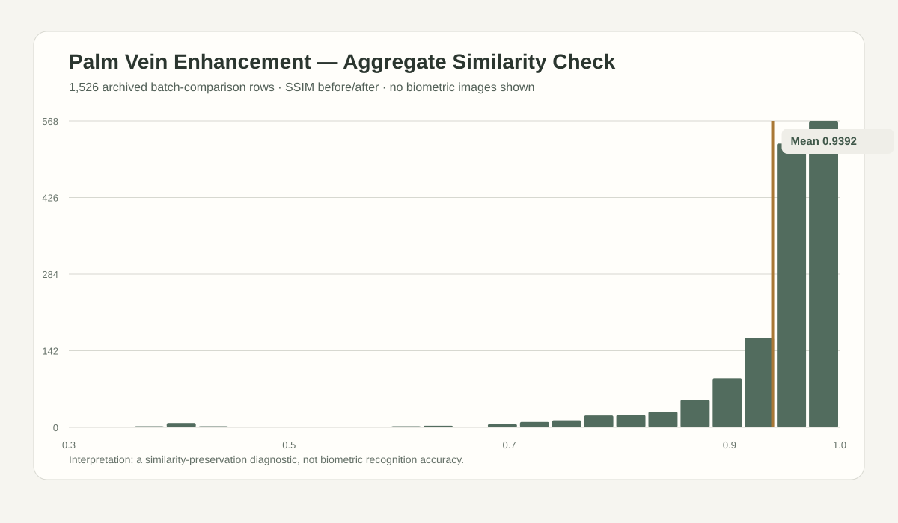

The problem
Image enhancement must preserve reference structure, not only visual quality.
Dirt, warmth, and moisture degrade NIR palm-vein imagery. For a biometric use case, the goal cannot simply be a visually smoother image: the enhancement must preserve structure relative to the clean reference.
The method
Constrain a generative edit with low-frequency preservation.
I built a condition-specific InstructPix2Pix pipeline with FFT low-frequency preservation and reference blending. The work evaluates Dirty, Warm, and Wet conditions rather than treating all degradation as interchangeable noise.
Low smoothing keeps a toy branching pattern intact. This is a synthetic illustration, not biometric data.
Evaluation / two distinct setups
Controlled experiment and archived QA stay separate.
Condition-group means: Dirty 0.460, Warm 0.438, Wet 0.455 SSIM. Corresponding PSNR values: 21.68, 20.90, and 19.80.
A separate before/after SSIM distribution. Comparator construction and condition membership are not retained, so it is not merged with the controlled experiment.
The chart below is intentionally limited to aggregate similarity values. It is a QA diagnostic, not a claim about biometric recognition accuracy or physical-capture realism.

1,526 aggregate comparison rows. No palm-vein image, crop, identifier, or dataset example is shown.
Data boundary
Visual outputs are not public evidence by default.
The project produced comparison triplets, heatmaps, and histograms, but this public case study excludes biometric-derived imagery pending separate data-license and consent review. The public artifact is the aggregate evaluation record and the method description only.